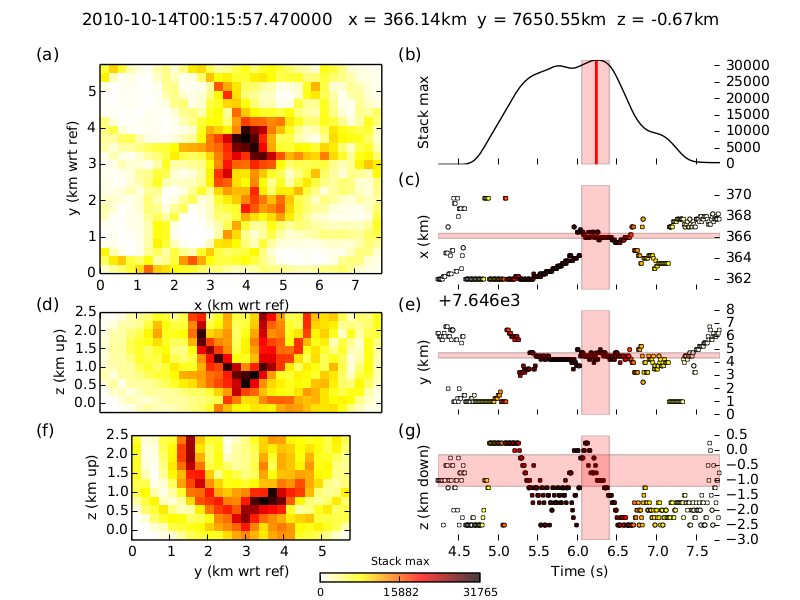
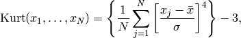
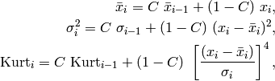

WaveLoc is a simple detector and preliminary locator for seismic phenomena. It is based on the central principle that the coherence of arrivals across a network contains the necessary information for both detection and preliminary location. It’s main object is to provide an alternative to traditional detection / location by picking and associating discrete arrival times, a process that becomes complex during earthquake swarms or aftershock sequences.
As the basic source of information for single-event location are the (physically coherent) arrival times at seismic stations, we enhance the first arrival information on the the recorded seismograms by applying a kurtosis filter.
We then migrate the kurtosis waveforms back to a grid of possible event locations, and stack. The maxima of the stack act as both detection and preliminary location of the events.
Here is the result of an example run:
The method is explained in greater detail below, and in a manuscript currently being written.
The kurtosis is the fourth moment of the data, and indicates how non-gaussian a distribution is.

Distributions that are more peaked than gaussian distributions are will have a strong positive value of the kurtosis. Distributions that are flatter than gaussian distributions will have negative values. The arrivals of seismic phases are strongly non-gaussian, and tend to produce strongly peaked amplitude distributions, and hence positive kurtosis values. The -3 in the formula above normalises the kurtosis to zero for a gaussian distribution. See kurtosis column in the introductory figure for an example.
As the kurtosis calculation in the above equation can be quite cumbersome to calculate on large volumes of data, we use instead the following formulation for a recursive kurtosis calculation:

where the constant C is the ratio of the time-step of the data and a chosen window length for the kurtosis calculation. The maximum of the kurtosis is sligtly delayed with respect to the true first arrival, and this delay would induce a significant bias in the migrated origin times if the kurtosis waveforms themselves were used for the migration. In order to reduce this bias, we use the positive time-derivative of the kurtosis waveforms for migration.
During the second step of the WaveLoc process, we migrate the waveforms obtained in the first step onto a target grid of potential hypocentral locations, using an a-priori P-wave velocity model for the region. We are exploiting here the coherence of first-arrival information across a network of stations, subject to sufficient knowledge of the regional velocity structure. We calculate travel-times from each point of the target grid to each station through a 1-D or 3-D P-wave velocity model, using the REF eikonal solver as implemented by REF in the NonLinLoc package. For each point of the target grid, we shift each waveform back by the corresponding travel-time, then stack the shifted waveforms to create a point-stack. The 3D grid of such point stacks defines a stack volume, at each point of which corresponds a time-series, so in the end we have a 4D volume in space and time. Local maxima of this 4D volume correspond to event detections.
For a typical problem with 20 stations, a search grid of 30x30x10=9000 target points, and a sample-rate of 100Hz, the stack-volume will contain 3.24e9 data-points per hour of recorded data. In order to simplify the task of sifting through such a large volume of data, and to reduce storage needs, we create and store a summary-stack containing for each time the maximum value of stack volume, and we also store the coordinates of the corresponding target points. Strong local maxima in the summary stack occur at the origin times of seismic events, and their corresponding locations can be read directly from the stored coordinates.
We intend by detection the determination of the occurrence of a seismic event, and by location the determination of its origin time, its hypocentral coordinates and their corresponding uncertainties. As described above, we detect events directly from the sumamry time-series, by applying a simple triggering algorithm with a given threshold.
Once the triggering algorithm detects the occurrence of an event on, we assign the time at which the corresponding local maximum occurs as the origin time, and define the left and right uncertainty bounds around this origin time by taking the times at which the summary stack descends to 95% of its value at the local maximum. We take as hypocentral coordinates and their uncertainties respectively the mean and standard deviation of the coordinates corresponding to the maximum values, between the left and right times.